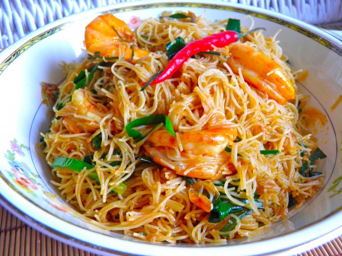
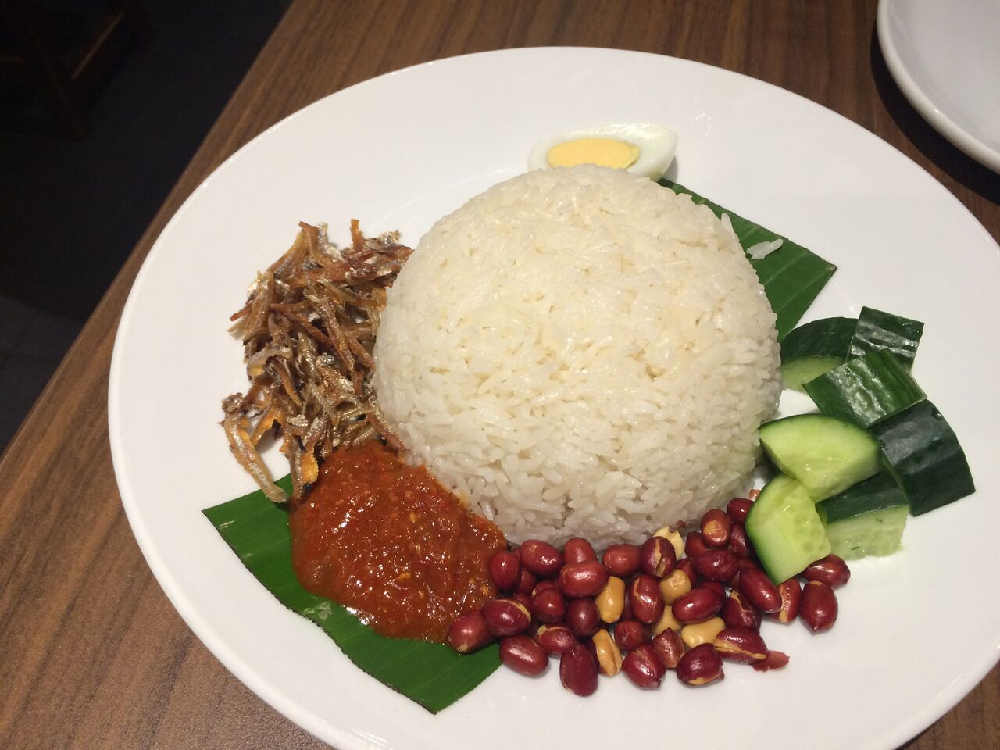

| |

Hello my name is Nurul Natasya Bt Nor Asmari. I am 21 years old. I live in Cheras Selangor and was born on 23 May 1999 at Ipoh Perak.
I am currently study for my diploma in Information Management at UiTM Rembau and currently this is my last semester. The goal I'm currently striving for is to make this world a better place to live in by starting the changes with myself. Sure, I've had bad experiences in my life too, but this is exactly what made me the way I am now. I feel even more responsibility for what I do and where I go. With all I already have, I know that I'm on the right path and I will do my best to inspire others to live the way they feel like living as well.
This is My Little Bit Getting Know of Me:Roti Canai
Bihun Goreng
Nasi Lemak
This is my most favorite Website, the website is about the skincare rountine tips, study tips, parenting and many more. I always follow the tips that Iman share through her website. With all the information given, I manage to have the good life and try many new things like the best skincare product and how to study effectively. Beside that, during this pandemic covid-19, I always check out many website or blog that have a meaningful information.
This website also full with nice and informative content.I like where she manage to make her website become more informative and have a nice illustrastion. Mostly girl and boy are visiting this website because this website is general and share about skincare whereby many people concern with their skin.
Kindly hoping you will visit this Website.
😆😉

©Nurul Natasya website 2020